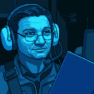
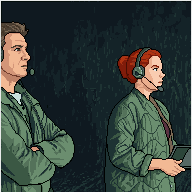
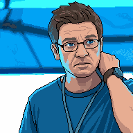
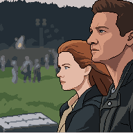
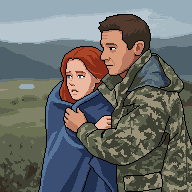

Ten quotes from the film are listed below. Some are Ian’s and some belong to other characters. Your job is to identify his voice.
Ian believes science is the cornerstone of civilisation, at least until a linguist proves him wrong. Below are five moments from the film. For each, fill in his exact words.

Ian: Yeah, it’s great. Even if it’s
ADJ ▾.
Louise: It’s
ADJ ▾?
Ian: Well, the cornerstone of civilization isn’t
NOUN ▾, it’s
NOUN ▾.

Louise: So, what are we gonna call them?
Ian: I don’t know. I was thinking
NAME ▾ and
NAME ▾.

Ian: As I watch you steer us around these NOUN ▾ traps that I didn’t even know existed, it’s like, “what?” I guess that’s why I’m ADJ ▾.

Louise: If you could see your whole life from start to finish, would you change things?
Ian:
ADV ▾
I’d say what I
VERB ▾
more often. I-I don’t know.

Ian: You know I’ve had my head tilted up to the NOUN ▾ for as long as I can VERB ▾. You know what VERB ▾ me the most? It wasn’t meeting PRN ▾. It was meeting PRN ▾.
Use Ian’s word choices to describe who he is.
Ian’s verbs and nouns are the clue. Use them to work out what he wants.
Storytelling is driven by characters facing and overcoming conflict. Describe Ian’s.
Choose one scenario and write Ian’s monologue. Use the word banks to stay in his voice: he is a scientist who has learned to feel, and he is working through something his equations cannot solve.
Scenario A
Louise has just told Ian what she knew would happen to Hannah. Write his response as a one-sided monologue.
Scenario B
Ian gives a toast at Hannah’s first birthday. He doesn’t know what Louise knows.
Scenario C
Write Ian speaking in a moment you choose: to Louise, to Hannah, to the heptapods, or to himself.